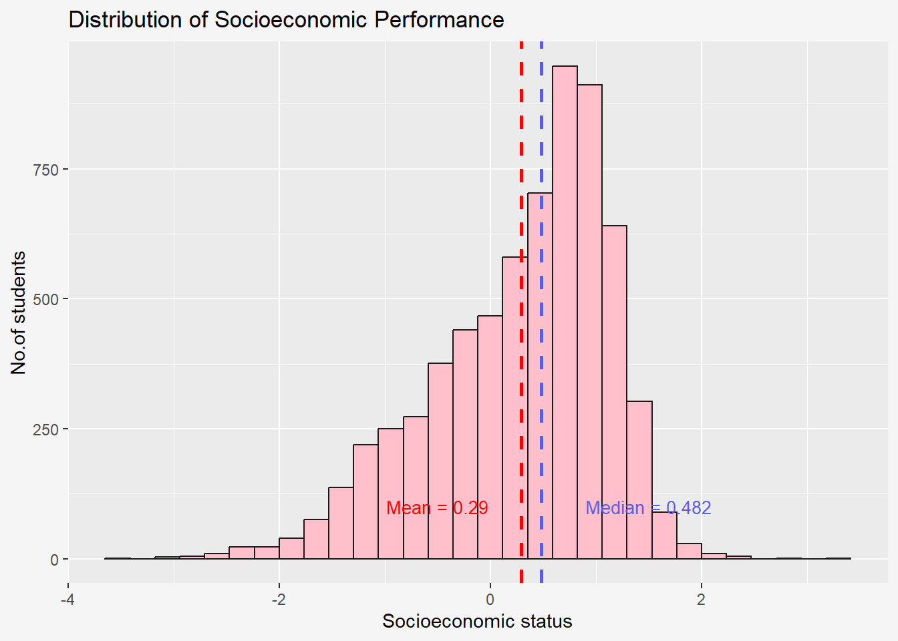
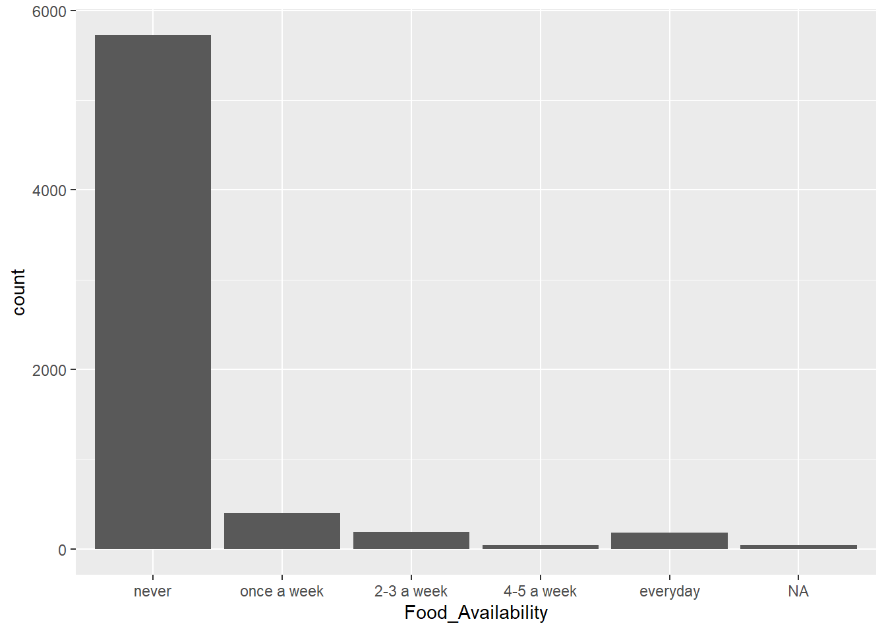
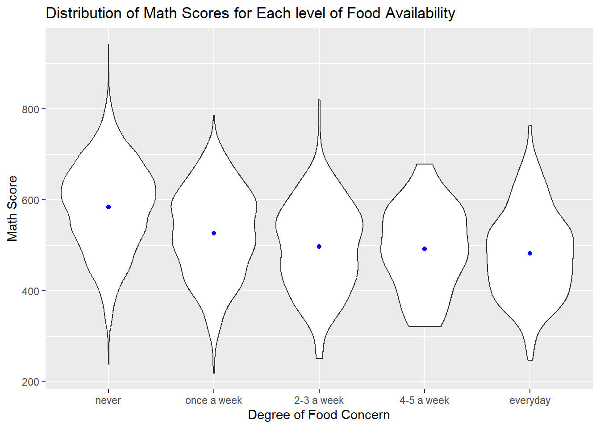
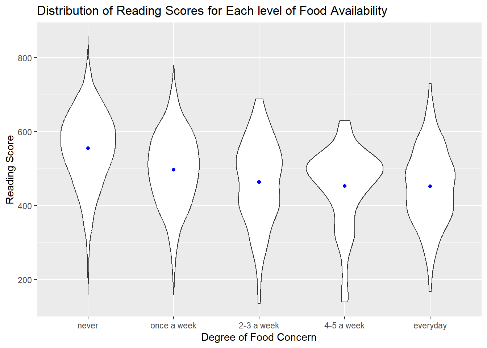

pacman::p_load(tidyverse,haven,ggrepel, patchwork, ggthemes, hrbrthemes, ggrain)Take-home_Ex1
Project Brief
“Singapore managed to achieve excellence without wide differences between children from wealthy and disadvantaged families,” said OECD education director Andreas Schleicher in a BBC piece. However, the general public, however, is adamant that there are still differences between educational attainment and socioeconomic position.
This project will explore multiple possible factors that could help to verify and investigate the statement further, utilizing the proper R statistical graphics techniques, both interactive and static.
Project Objective
This project aims to assess if there still social difference among different background of families. Students’ performance on math, reading and science will be the main metrics. The effects brought by school, gender and socioeconomic status on student’s academic performance will be tested in this project. Besides, the socioeconomic status will be demonstrated through number of digital devices, number of musical instruments, and food availability.
1: Data Preparation
1.1 Loading R package
Let’s load the libraries and R package needed for this assignment using pacman::p_load() function:
The loaded packages are:
tidverse
haven:
ggrepel:
patchwork:
ggthemes:
hrbrthemes:
ggrain:
1.2 Dataset
The dataset using in this assignment is taking from PISA 2022 database, called student questionnaire data file. It is uploaded as stu_qqq.
1.2.1 Import the datasets
In terms of import dataset, there is an extra step before getting the final dataset. Since we are only interest in Singapore students’ related performance and information, a filter is applied to extract all Singapore data.
stu_qqq <-read_sas("data/cy08msp_stu_qqq.sas7bdat")This is the output dataset using filter () function to select all Singapore student data.
stu_qqq_SG <-stu_qqq %>%
filter(CNT == "SGP")write_rds(stu_qqq_SG,
"data/stu_qqq_SG.rds")stu_qqq_SG <-
read_rds("data/stu_qqq_SG.rds")1.2.2 Summary Statistics of Stu_qqq_data
This is a summary statistics of the stu_qqq data, after using glimpse () to get a overview of basic information of the dataset (i.e., number of records, detail of variables ), applying duplicated () and is.na() to check if there is any duplicates data and missing values.
After running the function, here is the results:
glimpse(stu_qqq_SG)Observations: 6606
Columns: 1279
Example variable display:
$ CNTSCHID <dbl> 70200052, 70200134, 70200112, 70200004, 70200152, 70200043, … $ ST004D01T <dbl> 1, 2, 2, 2, 1, 1, 2, 2, 1, 2, 2, 1, 1, 2, 1, 2, 1, 2, 1, 1, … $ ST006Q01JA <dbl> 2, 2, 2, 2, 2, 2, 2, NA, 2, 2, NA, 2, 1, 2, 2, 2, 2, 2, 2, 2…
The dataset contains basic information of sudents (i.e., school ID, birth month and year), and their answer for questions under different questionnaire.
Duplicates
stu_qqq_SG[duplicated(stu_qqq_SG),]# A tibble: 0 × 1,279 # ℹ 1,279 variables: CNT <chr>, CNTRYID <dbl>, CNTSCHID <dbl>, CNTSTUID <dbl>, # CYC <chr>, NatCen <chr>, STRATUM <chr>, SUBNATIO <chr>, REGION <dbl>, # OECD <dbl>, ADMINMODE <dbl>, LANGTEST_QQQ <dbl>, LANGTEST_COG <dbl>, # LANGTEST_PAQ <dbl>, Option_CT <dbl>, Option_FL <dbl>, Option_ICTQ <dbl>, # Option_WBQ <dbl>, Option_PQ <dbl>, Option_TQ <dbl>, Option_UH <dbl>, # BOOKID <dbl>, ST001D01T <dbl>, ST003D02T <dbl>, ST003D03T <dbl>, # ST004D01T <dbl>, ST250Q01JA <dbl>, ST250Q02JA <dbl>, ST250Q03JA <dbl>, …- There is no duplicates inside the dataset
Missing Values
sum(is.na(stu_qqq_SG))[1] 4168500There are 4168500 values missing, mainly missing value are NA data.
Example:
$ LANGTEST_PAQ <dbl> NA, NA, NA, NA, NA, NA, NA, NA, NA, NA, NA, NA, NA, NA, NA, …
2. Data Wrangling
2.1 Select Useful Columns
Since there are quite number of variables, it is not realistic if we analyze all the variables. Therefore, the variable select below are the ones that this assignment will focus on, using select () .
Besides, the original variable is named in a code base and numeric way, so it is easy for people to understand and use if it is named as word. The name of variable below is after using remame() .
stu_qqq_eda<-stu_qqq_SG %>%
select(CNTSCHID,CNTSTUID,ST004D01T,ST253Q01JA,ST258Q01JA, ST251Q06JA, PV1MATH, PV1READ, PV1SCIE)%>%
rename(c(Gender="ST004D01T",
School_ID="CNTSCHID",
Num_DigitalDevice='ST253Q01JA',
Food_Availability='ST258Q01JA',
Num_MusicalInstruments='ST251Q06JA',
Student_ID='CNTSTUID',
Math_Score= "PV1MATH",
Reading_Score="PV1READ",
Science_Score="PV1SCIE"))Stu_qqq_eda is the final dataset which will be used in this assignment with 6606 observations of 9 variables.
2.2 Change Data Types
School_ID, Gender, Num_DigitaDevice, Food_Availability, Num_MusicalInstruments are categorized as num, but they are categorical data with different levels. Therefore, they are cast as factor type using as.factor().
stu_qqq_eda$School_ID = as.factor(stu_qqq_eda$School_ID)
stu_qqq_eda$Gender = as.factor(stu_qqq_eda$Gender)
stu_qqq_eda$Num_DigitalDevice = as.factor(stu_qqq_eda$Num_DigitalDevice)
stu_qqq_eda$Food_Availability = as.factor(stu_qqq_eda$Food_Availability)
stu_qqq_eda$Num_MusicalInstruments= as.factor(stu_qqq_eda$Num_MusicalInstruments)2.3 Recode variable
Currently, “gender” variable is using “1”, “2” to represent for male and female. However, it might be not clear in the future analysis for people to quickly identify female and male. Therefore, rename the option is important for people to get a quick understanding, using recode() function.
stu_qqq_eda <- stu_qqq_eda %>%
mutate(Gender=(recode(Gender, '1'="Female", '2'="Male")))3. Exploratory Data Analysis (EDA)
Before conduct EDA, since the target metrics is students performance in math, reading and science, it is necessary to see the overall distribution of students performance across all this three subjects.
Students Performance Distribution
Histogram are used to show the frequency distribution for numerical data. geom_histogram() function in ggplot is applied to draw the graph.
Show code
ggplot(data=stu_qqq_eda,
aes(x=Math_Score)) +
geom_histogram(color= "grey10",
fill= '#FFC0CB') +
labs(x= "Math_Score",
y="No.of students",
title= "Distribution of Student Math Performance") +
geom_vline(aes(xintercept=median(stu_qqq_eda$Math_Score, na.rm = T)),
color="#595DE5",
linewidth=1,
linetype="dashed") +
annotate("text",
x=675,
y=70,
label= paste("Median =", round(median(stu_qqq_eda$Math_Score, na.rm = T), 3)),
color= "#595DE5",
size=3.5) +
geom_vline(aes(xintercept=mean(stu_qqq_eda$Math_Score, na.rm = T)),
colour="red",
linewidth=1,
linetype="dashed") +
annotate("text",
x=500,
y=20,
label=paste("Mean =", round(mean(stu_qqq_eda$Math_Score, na.rm = T), 3)),
color="red",
size=3.5) +
theme(plot.background=element_rect(fill="#f5f5f5",colour="#f5f5f5"))
Show code
ggplot(data=stu_qqq_eda,
aes(x=Reading_Score)) +
geom_histogram(color= "grey10",
fill= '#FFC0CB') +
labs(x= "Reading_Score",
y="No.of students",
title= "Distribution of Student Reading Performance") +
geom_vline(aes(xintercept=median(stu_qqq_eda$Reading_Score, na.rm = T)),
color="#595DE5",
linewidth=1,
linetype="dashed") +
annotate("text",
x=650,
y=60,
label= paste("Median =", round(median(stu_qqq_eda$Reading_Score, na.rm = T), 3)),
color= "#595DE5",
size=3.5) +
geom_vline(aes(xintercept=mean(stu_qqq_eda$Reading_Score, na.rm = T)),
colour="red",
linewidth=1,
linetype="dashed") +
annotate("text",
x=460,
y=50,
label=paste("Mean =", round(mean(stu_qqq_eda$Reading_Score, na.rm = T), 3)),
color="red",
size=3.5) +
theme(plot.background=element_rect(fill="#f5f5f5",colour="#f5f5f5"))
Show code
ggplot(data=stu_qqq_eda,
aes(x=Science_Score)) +
geom_histogram(color= "grey10",
fill= '#FFC0CB') +
labs(x= "Science_Score",
y="No.of students",
title= "Distribution of Student Science Performance") +
geom_vline(aes(xintercept=median(stu_qqq_eda$Science_Score, na.rm = T)),
color="#595DE5",
linewidth=1,
linetype="dashed") +
annotate("text",
x=650,
y=60,
label= paste("Median =", round(median(stu_qqq_eda$Science_Score, na.rm = T), 3)),
color= "#595DE5",
size=3.5) +
geom_vline(aes(xintercept=mean(stu_qqq_eda$Science_Score, na.rm = T)),
colour="red",
linewidth=1,
linetype="dashed") +
annotate("text",
x=480,
y=50,
label=paste("Mean =", round(mean(stu_qqq_eda$Science_Score, na.rm = T), 3)),
color="red",
size=3.5) +
theme(plot.background=element_rect(fill="#f5f5f5",colour="#f5f5f5"))
From the histogram show above, students’ math, reading, and science demonstrated a normal distribution with a similar mean and median score across this three subjects. More than half of the students’ score is in the range from 500-600.
3.1 Are there difference in student performance between gender ?
Distribution
The first EDA is to explore the difference in students’ performance between male and female.
From the bar chart below shows that number of students between male and female have no significant difference. There are around 3500 students for male and female.
ggplot(data = stu_qqq_eda,
aes(x = Gender)) +
geom_bar()
Moving on to the analysis part, the idea of choosing histogram is that it can clearly show performance distribution among every range of score.
Show code
ggplot(data=stu_qqq_eda,
aes(x=Math_Score,
fill = Gender)) +
geom_histogram(bins = 10,
position= "dodge",
color="grey10") +
scale_fill_manual(values = c("#F98B88", "#F5FFFA")) +
scale_y_continuous(breaks = seq(0, 3200, by = 500)) +
scale_x_continuous(breaks = seq(0, 1000, by = 100)) +
ylim(c(0,1000)) +
stat_bin(bins = 10,
geom = "text",
aes(label = after_stat(count)),
vjust = -.5, size=2.5,
position = position_dodge())Show code
ggplot(data=stu_qqq_eda,
aes(x=Reading_Score,
fill = Gender)) +
geom_histogram(bins = 10,
position= "dodge",
color="grey10") +
scale_fill_manual(values = c("#F98B88", "#F5FFFA")) +
scale_y_continuous(breaks = seq(0, 3200, by = 500)) +
scale_x_continuous(breaks = seq(0, 1000, by = 100)) +
ylim(c(0,1000)) +
stat_bin(bins = 10,
geom = "text",
aes(label = after_stat(count)),
vjust = -.5, size= 2.5,
position = position_dodge())
Show code
ggplot(data=stu_qqq_eda,
aes(x= Science_Score,
fill = Gender)) +
geom_histogram(bins = 10,
position= "dodge",
color="grey10") +
scale_fill_manual(values = c("#F98B88", "#F5FFFA")) +
scale_y_continuous(breaks = seq(0, 3200, by = 500)) +
scale_x_continuous(breaks = seq(0, 1000, by = 100)) +
ylim(c(0,1000)) +
stat_bin(bins = 10,
geom = "text",
aes(label = after_stat(count)),
vjust = -.5, size= 2.5,
position = position_dodge())3.2 Are there difference in student performance among various schools?
Distribution
stu_avg_score <- stu_qqq_eda %>%
group_by(School_ID) %>%
mutate(math_avg = mean(Math_Score),
science_avg = mean(Science_Score),
reading_avg = mean(Reading_Score)) %>%
select(School_ID, math_avg, science_avg, reading_avg) %>%
unique() ggplot(data=stu_avg_score,
aes(x= math_avg)) +
geom_boxplot(width=0.1) +
geom_point(aes(y= -0.1), position= position_jitter(width = 0.1, height = 0), color = "red", alpha = 0.5) +
ylim(c(-.1,.1)) +
scale_y_continuous(NULL, breaks = NULL)
labs(x= "Math Average among schools", y= NULL)$x
[1] "Math Average among schools"
$y
NULL
attr(,"class")
[1] "labels"ggplot(data=stu_avg_score,
aes(x= science_avg)) +
geom_boxplot(width=0.1) +
geom_point(aes(y= -0.1), position= position_jitter(width = 0.1, height = 0), color = "red", alpha = 0.5) +
ylim(c(-.1,.1)) +
scale_y_continuous(NULL, breaks = NULL)
labs(x= "Science Average among schools", y= NULL)$x
[1] "Science Average among schools"
$y
NULL
attr(,"class")
[1] "labels"ggplot(data=stu_avg_score,
aes(x= reading_avg)) +
geom_boxplot(width=0.1) +
geom_point(aes(y= -0.1), position= position_jitter(width = 0.1, height = 0), color = "red", alpha = 0.5) +
ylim(c(-.1,.1)) +
scale_y_continuous(NULL, breaks = NULL)
labs(x= "Reading Average among schools", y= NULL)$x
[1] "Reading Average among schools"
$y
NULL
attr(,"class")
[1] "labels"3.3 Socioeconomic Status
3.3.1 Will number of digital devices affect student performance ?
Distribution
ggplot(data = stu_qqq_eda,
aes(x = Num_DigitalDevice)) +
geom_bar()
cleaned_stu_qqq_eda <- na.omit(stu_qqq_eda)ggplot(data = cleaned_stu_qqq_eda, aes(x = factor(Num_DigitalDevice), y = Math_Score)) +
geom_boxplot() +
labs(x = "Number of Digital Devices", y = "Math Score") +
ggtitle("Distribution of Math Scores for Each Number of Devices")
ggplot(data = cleaned_stu_qqq_eda, aes(x = factor(Num_DigitalDevice), y = Reading_Score)) +
geom_boxplot() +
labs(x = "Number of Digital Devices", y = "Math Score") +
ggtitle("Distribution of Reading score for Each Number of Devices")ggplot(data = cleaned_stu_qqq_eda, aes(x = factor(Num_DigitalDevice), y = Science_Score)) +
geom_boxplot() +
labs(x = "Number of Digital Devices", y = "Math Score") +
ggtitle("Distribution of Science Scores for Each Number of Devices")
3.3.2 Will number of musical instruments affect student performance ?
Distribution
ggplot(data = stu_qqq_eda,
aes(x = Num_MusicalInstruments)) +
geom_bar()ggplot(data = cleaned_stu_qqq_eda, aes(x = factor(Num_MusicalInstruments), y = Math_Score)) +
geom_bar(stat = "summary", fun = "mean") +
labs(x = "Number of Musical Instruments", y = "Mean Math Score") +
ggtitle("Mean Math Score for Each Number of Instruments")
ggplot(data = cleaned_stu_qqq_eda, aes(x = factor(Num_MusicalInstruments), y = Reading_Score)) +
geom_bar(stat = "summary", fun = "mean") +
labs(x = "Number of Musical Instruments", y = "Mean Reading Score") +
ggtitle("Mean Reading Score for Each Number of Instruments")
ggplot(data = cleaned_stu_qqq_eda, aes(x = factor(Num_MusicalInstruments), y = Science_Score)) +
geom_bar(stat = "summary", fun = "mean") +
labs(x = "Number of Musical Instruments", y = "Mean Math Score") +
ggtitle("Mean Math Score for Each Number of Instruments")
3.3.3 Will food availability affect student performance ?
Distribution
ggplot(data = stu_qqq_eda,
aes(x = Food_Availability)) +
geom_bar()
ggplot(data = cleaned_stu_qqq_eda, aes(x = factor(Food_Availability), y = Math_Score)) +
geom_violin() +
labs(x = "Degree of Food Availability", y = "Math Score") +
ggtitle("Distribution of Math Scores for Each level of Food Availability") +
stat_summary(fun = "mean",
geom = "point",
color = "blue")
ggplot(data = cleaned_stu_qqq_eda, aes(x = factor(Food_Availability), y = Reading_Score)) +
geom_violin() +
labs(x = "Degree of Food Availability", y = "Reading Score") +
ggtitle("Distribution of Reading Scores for Each level of Food Availability") +
stat_summary(fun = "mean",
geom = "point",
color = "blue")
ggplot(data = cleaned_stu_qqq_eda, aes(x = factor(Food_Availability), y = Science_Score)) +
geom_violin() +
labs(x = "Degree of Food Availability", y = "Science Score") +
ggtitle("Distribution of Science Scores for Each level of Food Availability") +
stat_summary(fun = "mean",
geom = "point",
color = "blue")